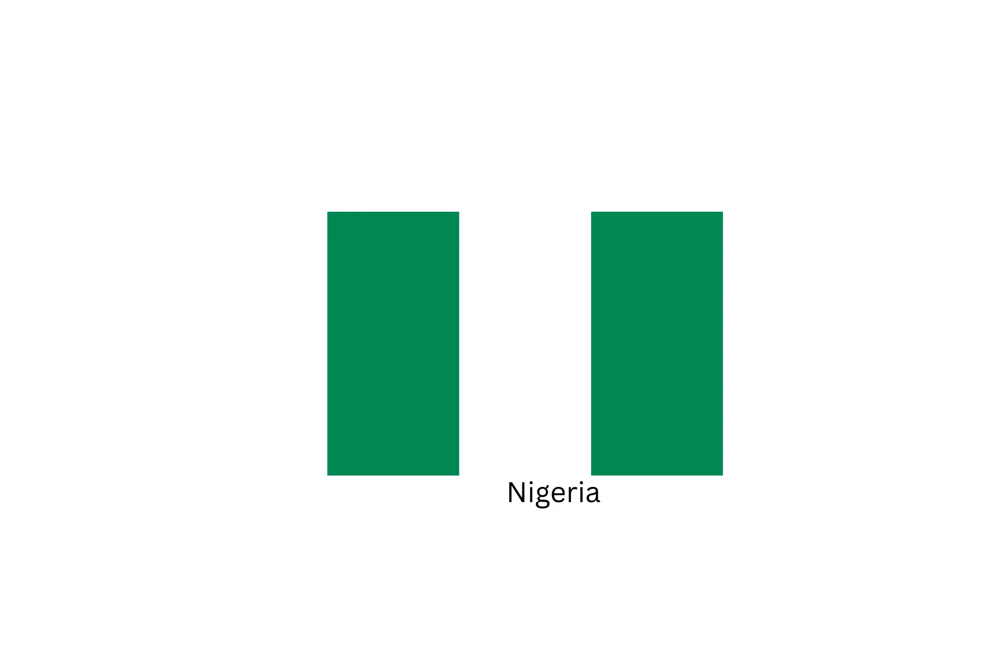

About Me
My name is Prince Joseph Otu. I was born in Nigeria but live in Johannesburg South Africa. I am currently working as an Indexer with FamilySearch managed by Springboard. My family is my greatest supporter and I truly love them, I love to listen to Trending market analyses, and current affairs and learn new things.
About Nigeria
Nigeria, an African country on the Gulf of Guinea, has many natural landmarks and wildlife reserves. Protected areas such as Cross River National Park and Yankari National Park have waterfalls, dense rainforests, savanna, and rare primate habitats.